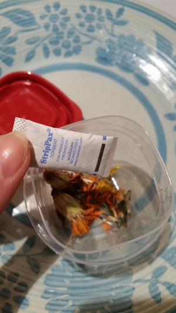

Collect Marigolds as they fall off naturally - the entire head contains many seeds

Keep dry packs from bottles of vitamins to use again for seed storage
Label seed containers with type and year
Spread the harvest! Share seeds with neighbors and watch your supply of seeds and flowers grow exponentially
Marigolds are the soldier of the garden in that they sacrifice themselves to harmful pests who would otherwise eat your vegetables. Plant plenty of them and do not be distraught if they seem to die quickly, that's they're job.